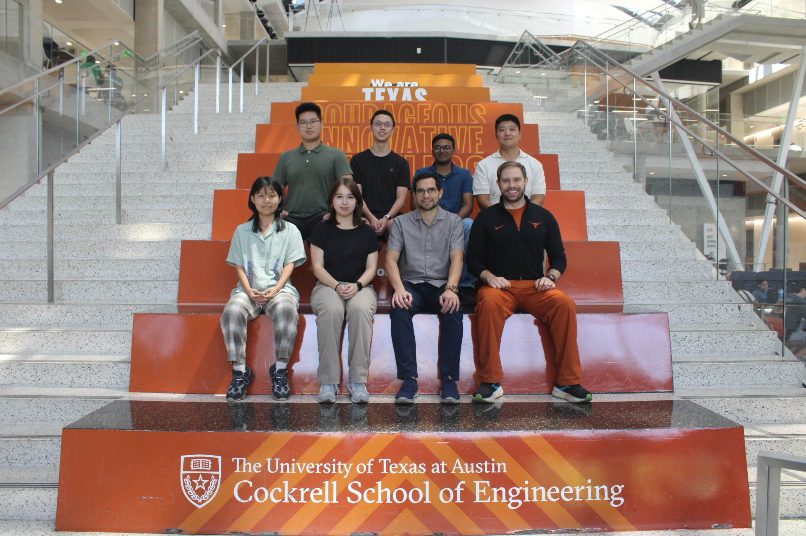

We develop sustainable chemical and biological processes to recover resources from waste streams and remove emerging contaminants and pathogens.
The Sustainable Waste Resource Recovery Lab is a research group led by Principal Investigator, Dr. Xavier Fonoll Almansa, under the Fariborz Maseeh Department of Civil, Architectural and Environmental Engineering. The research group uses microbial community engineering and, environmental and cost analyses to develop sustainable chemical and biological processes that recover resources from wastes and remove emerging contaminants and pathogens. During our research we collaborate with utilities, industry, national laboratories and other academic institutions.
We engineer microbial communities through process design and modeling to make systems sustainable and resilient, protecting the environment and human health.
Our goal is to train the next generation of scientists and engineers on chemical and biotechnology processes to recover resources. During his classes Dr. Fonoll Almansa combines traditional and active learning techniques, fostering an inclusive environment.
Our group is based on peer mentoring and driven by curiosity. We foster an inclusive environment to welcome new members and collaborators.